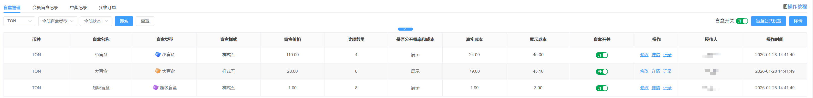
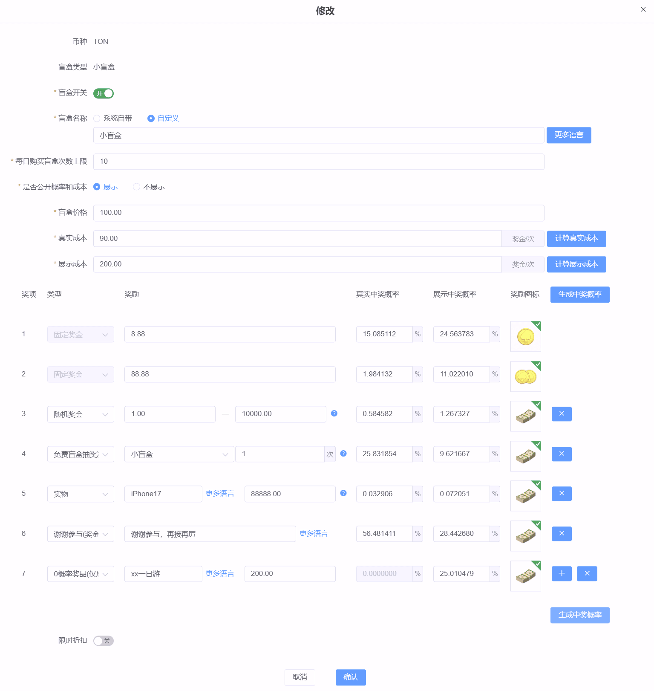
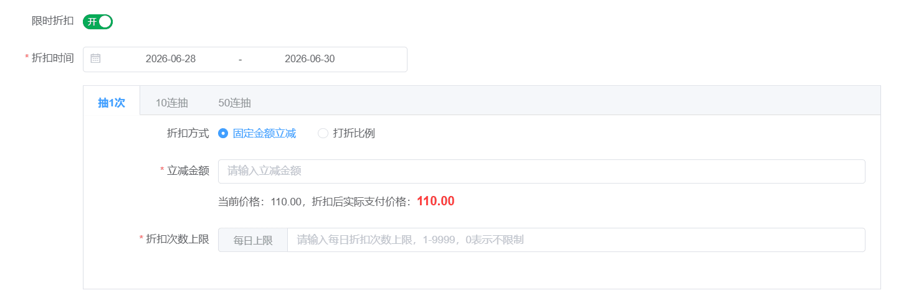
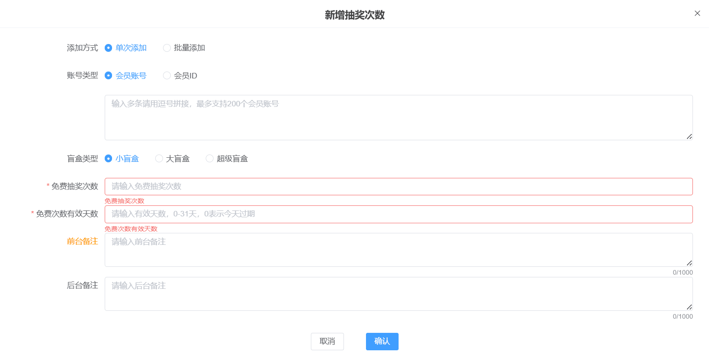

盲盒抽奖 · 操作与运营教程
通过抽盲盒赢奖金与实物的趣味玩法，刺激玩家用余额持续参与、提升活跃与充值；中奖金额直接到余额、无需打码，体验顺畅。
一、功能概述
| 项目 | 说明 |
| 解决什么 | 给玩家一个趣味、有惊喜感的消费出口：用余额抽盲盒赢奖金和实物，带动活跃、复充与留存。 |
| 玩法 | 玩家用余额购买盲盒抽奖，或用免费次数抽奖（免费次数优先用）。抽中奖金直接到余额，抽中实物走发货。 |
| 盲盒类型 | 小盲盒、大盲盒、超级盲盒 3 种，每个币种每种各一套独立配置。 |
| 入口 | 后台：优惠 → 盲盒抽奖；客户端可在首页、我的、营销广告、悬浮图等多处配置入口，弹窗展示。 |
| 奖励形式 | 固定奖金、随机奖金、免费盲盒抽奖次数、实物、谢谢参与、0概率奖品（仅展示）。 |
二、配置盲盒（按币种）
在【优惠 → 盲盒抽奖 → 盲盒管理】，每个币种下有小/大/超级 3 种盲盒，点对应行【修改】配置。
 |
| 序 | 字段 | 说明 |
| 1 | 盲盒开关 | 控制该类型盲盒是否开启，关闭后客户端不展示。 |
| 2 | 品牌名称 | 多品牌站点展示。勾选品牌即该盲盒对所选品牌开启；目前各品牌共用同一套配置。 |
| 3 | 盲盒名称 | 系统自带或自定义。 |
| 4 | 每日购买次数上限 | 每个玩家每天最多买几次。 |
| 5 | 是否公开概率和成本 | 展示则前台向玩家公开概率与成本，不展示则隐藏。 |
| 6 | 盲盒价格 | 单次抽奖消耗的余额。 |
| 7 | 真实成本 | 实际期望支出，可点【计算真实成本】按奖项自动算。 |
| 8 | 展示成本 | 给玩家看的价值感，通常高于真实成本，可点【计算展示成本】。 |
三、奖项与概率
每个盲盒配多个奖项，每项设类型、奖励内容、真实中奖概率、展示中奖概率和图标。
| 奖项类型 | 说明 |
| 固定奖金 | 中奖即得一个固定金额。 |
| 随机奖金 | 在设定区间内随机一个金额。 |
| 免费盲盒抽奖次数 | 中奖赠送免费抽奖次数，可指定送小、大或超级盲盒的次数，可跨类型（如小盲盒里中超级盲盒 1 次）。 |
| 实物 | 中奖赠送实物，玩家填收货地址后由后台在实物订单发货。 |
| 谢谢参与 | 未中奖，奖金为 0。 |
| 0概率奖品（仅展示） | 真实中奖概率固定为 0、不可编辑，玩家永远抽不中，仅用于客户端橱窗展示营造大奖氛围。这里填的金额只是用来算出一个好看的展示中奖概率，纯展示、不实际派奖；也可填文字说明或虚拟奖励名称。 |
概率与成本怎么配（两种方式）
 |
| 方式 | 操作 |
| 先定概率（自定义） | 手动填好每个奖项的真实中奖概率（和展示中奖概率），填完点【计算真实成本】【计算展示成本】，系统按你填的概率算出对应成本。 |
| 先定成本（生成概率） | 不手动填概率，填好成本目标后点【生成中奖概率】，系统按成本自动分配各奖项概率。多次点【生成中奖概率】，各奖项的概率分布会变，但总成本不变。 |
返奖率怎么看（重点）
配好后系统会算出返奖率＝真实成本 ÷ 盲盒价格，并在页面提示。这是判断盲盒赚不赚钱的核心指标，配置前一定要看。
| 返奖率 | 含义 |
| 大于 100% | 派出去的奖励超过盲盒售价，站点亏钱（让利给玩家）。例：盲盒价 110、真实成本 200，返奖率 181.82%，每抽一次平均倒贴。 |
| 等于 100% | 收支持平，不赚不亏。 |
| 小于 100% | 派出去的少于售价，玩家整体是亏的、站点赚钱。返奖率越低站点利润越高。 |
四、连抽与限时折扣
| 项目 | 说明 |
| 连抽 | 10 连抽即连续抽 10 次，一次扣 10 次的钱。玩家余额要够整组才能抽（如单价 10、10 连抽需余额至少 100）。 |
| 限时折扣 | 设折扣时间段，对抽 1 次、10 连抽、50 连抽分别配。折扣方式为固定金额立减或打折比例，按单价优惠（如优惠 10 即每次抽奖少花 10），可设每日折扣次数上限。 |
 |
五、免费次数
玩家抽奖时优先消耗免费次数，用完才扣余额。免费次数来源：任务、盲盒抽奖、意外惊喜、商城等奖励赠送，或后台手动发放。每笔免费次数在获得时固定各自的过期时间，到期作废。
在【会员盲盒记录】顶部点【新增抽奖次数】手动给会员发免费次数：
 |
| 字段 | 说明 |
| 添加方式 | 单次添加：手填账号或会员 ID，多条逗号拼接，最多 200 个。批量添加：上传文档批量发放，一次最多 100 万会员（建议每文档不超过 100 万、文档不超过 50M，超出分批；每会员单次最多加 100 次），可下载模板。 |
| 盲盒类型 | 指定发放的免费次数用于小、大还是超级盲盒。 |
| 免费抽奖次数 | 本次发放的次数。 |
| 免费次数有效天数 | 0-31 天，0 表示今日过期。 |
六、公共设置
在盲盒修改弹窗内还有面向整个盲盒活动的公共设置：
| 项目 | 说明 |
| 中奖公告 | 开启后客户端滚动展示中奖播报，营造活动氛围。 |
| 领取入口与限制 | 设置可参与的终端、设备/IP 限制、绑卡/KYC/首充/最近充值打码等参与条件，按站点实际情况勾选。 |
| 规则说明 | 系统自带或自定义，展示给玩家。 |
| 活动页面样式 | 样式一至样式六，下拉选客户端展示风格。 |
七、查看记录
盲盒抽奖共 4 个 tab，盲盒管理为配置页，另 3 个为查询页。
| tab | 作用 |
| 会员盲盒记录 | 查看会员的免费次数、累计抽奖、累计消耗与中奖情况；可手动新增免费次数、查看免费次数明细。 |
| 中奖记录 | 记录每一次抽奖的明细，方便后台查询：会员、盲盒名称、消耗金额、抽奖方式（余额抽奖/免费次数抽奖）、奖励类型、奖励金额、中奖时间等，可按奖励类型、盲盒类型、抽奖方式筛选。 |
| 实物订单 | 管理中奖实物的发货：填收货信息、快递单号发货，并按订单状态做对应操作（详见下方）。 |
实物订单的状态与操作
玩家中实物后订单进入【实物订单】，不同订单状态对应不同操作：
| 订单状态 | 说明 | 可用操作 |
| 待发货 | 玩家已填收货地址、等待后台发货。 | 修改、详情、强制取消、删除 |
| 已发货 | 已填快递单号和快递公司发出。 | 修改、详情、强制签收、删除 |
| 已签收 | 玩家已收货（或被强制签收）。 | 详情、删除 |
| 已取消 | 强制取消后的状态，后台和客户端都仍展示。 | 修改、详情、删除 |
| 已删除 | 删除后的状态，客户端不再展示，后台仍可查看。 | 修改、详情 |
批量操作：勾选多条订单后可批量发货、批量修改、批量强制签收、批量强制取消、批量删除，提升大量实物订单的处理效率。
八、运营建议
| 维度 | 建议 | 提示 |
| 价格梯度 | 小盲盒低价拉新尝鲜，大/超级盲盒高价高回报留住大额玩家 | 三档拉开价格和最高奖金差距，给玩家进阶动力。 |
| 成本控制 | 先点计算真实成本核对期望支出，再上线 | 真实成本接近或超过盲盒价格会亏，务必先算返奖率。 |
| 免费次数引流 | 用任务/意外惊喜发小盲盒免费次数，让玩家先体验 | 免费次数有有效期，配合活动节奏发放促回流。 |
| 限时折扣 | 大促时段对连抽做立减，刺激批量抽 | 设每日折扣次数上限，避免被过度薅。 |
九、常见问题 FAQ
Q：玩家抽奖优先扣免费次数还是余额？
A：优先用免费次数，用完才扣余额。
Q：连抽为什么点不了？
A：连抽要余额够整组才能抽，如单价 10、10 连抽需余额至少 100，不足则按钮不可点。
Q：真实成本和展示成本有什么区别？
A：真实成本是实际期望支出、按真实概率派奖；展示成本是给玩家看的价值感，通常更高。是否对外展示由【是否公开概率和成本】控制。
Q：0概率奖品有什么用？
A：真实中奖概率固定为 0、抽不中，仅在客户端橱窗展示营造大奖氛围吸引参与，填的金额只用来算出好看的展示概率，不实际派奖。
Q：抽中奖金要打码才能提现吗？
A：不用。盲盒抽奖直接消耗余额，中奖金额直接到余额，无打码要求，可直接提现。
Q：强制取消和删除实物订单有什么区别？
A：强制取消后订单状态为【已取消】，后台和客户端都还能看到；删除后状态为【已删除】，客户端不再展示，后台仍可查看。两者都可批量操作。
Q：实物订单太多怎么快速处理？
A：勾选多条订单用批量操作：批量发货、批量修改、批量强制签收、批量强制取消、批量删除。
Q：想查某个会员每次抽奖的明细去哪看？
A：在【中奖记录】查，每次抽奖都有记录，含消耗金额、抽奖方式、奖励类型与金额、中奖时间，可按奖励类型/盲盒类型/抽奖方式筛选。
Q：免费次数会过期吗？
A：会。每笔免费次数在获得时就固定了各自的过期时间，到期作废。